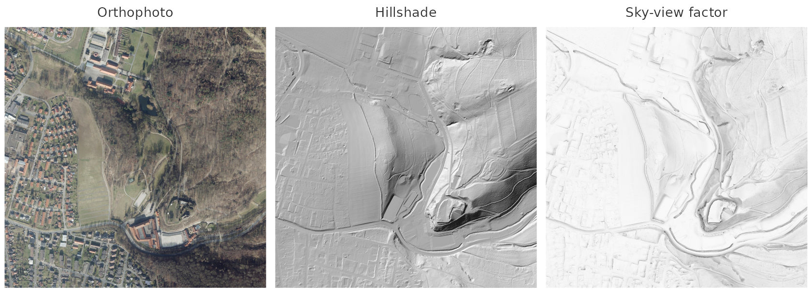
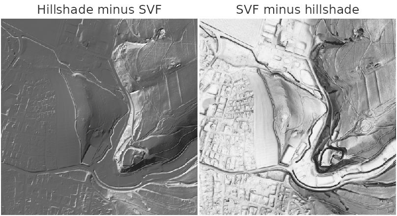
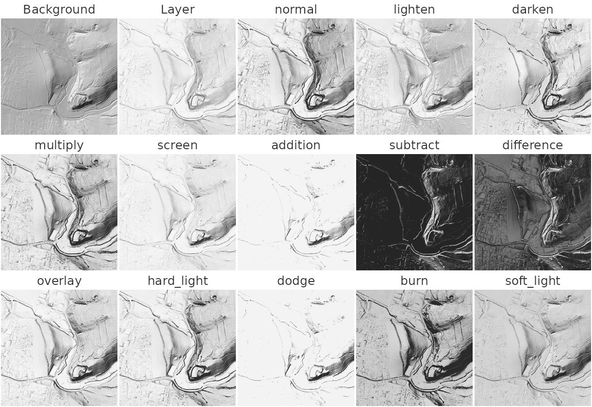
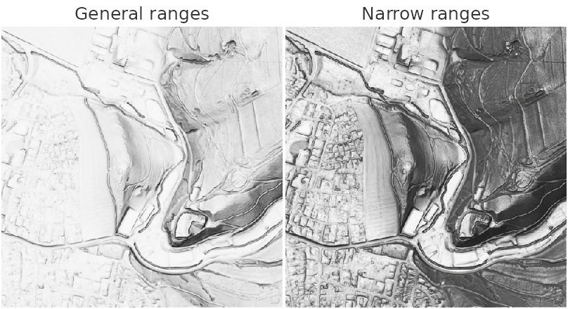
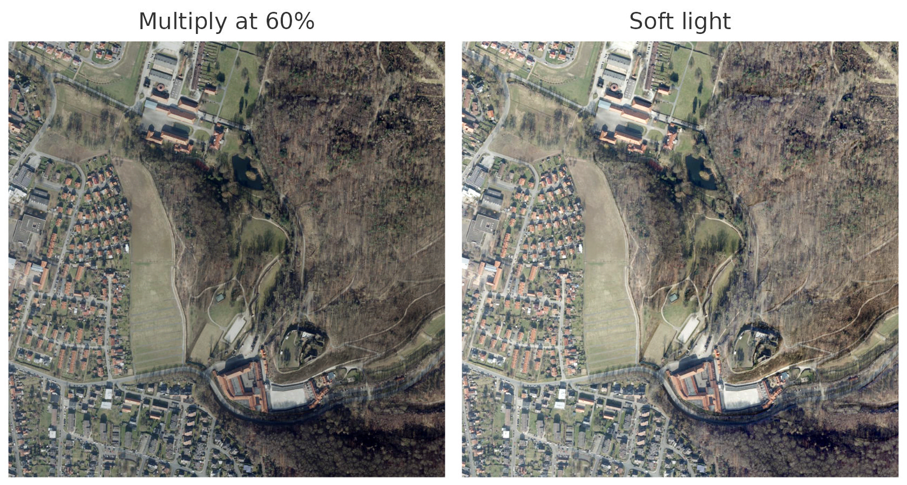
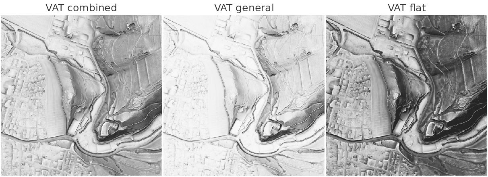
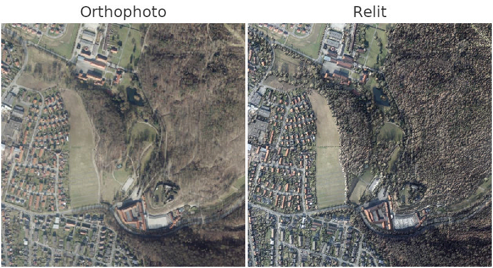
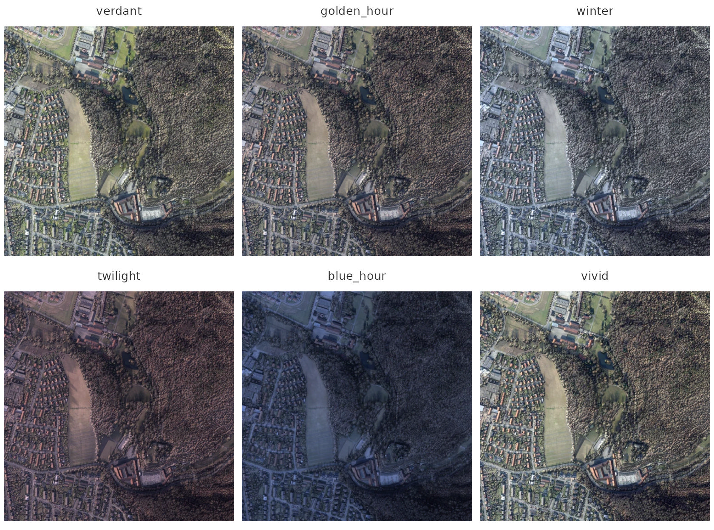
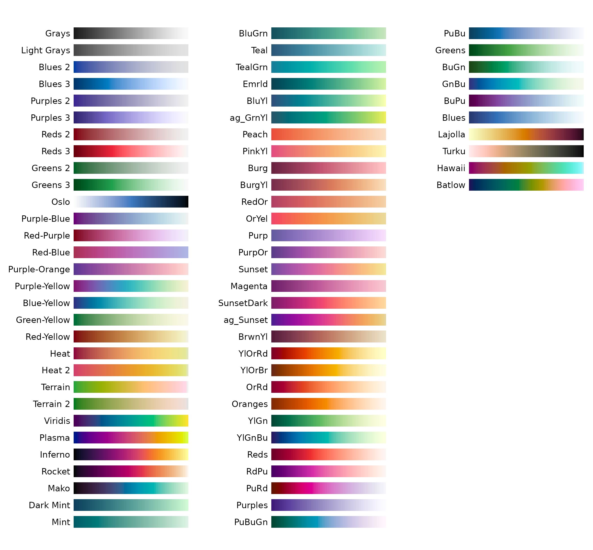

No single visualization shows everything about a landscape. A
hillshade gives the eye a familiar sense of relief but hides whatever
runs parallel to its light. A sky-view factor shows enclosed ground but
flattens slopes. An orthophoto shows what is there, but not the shape of
the ground beneath it. The usual answer is to lay several of them over
one another, and rvt_blend() does that with the same blend
modes a GIS offers.
This vignette explains how a blend is built, shows all thirteen modes side by side, works through two composites, covers the ready-made composite the package provides, and ends by relighting an orthophoto with its terrain.
The sample data
rvt_data_lgln() reads open data for any place in Lower
Saxony, streamed from the state survey authority. A point returns the 1
km tile it lies in; here, the tile beside Burg Hardenberg: farmland,
woodland, a castle on its spur and a village. The orthophoto is fetched
at 1 m, so it lies on the terrain grid.
pt <- c(9.9464, 51.6317) # longitude, latitude
dtm <- rvt_data_lgln(pt, "dtm") # terrain: the bare ground
rgb <- rvt_data_lgln(pt, "rgb", year = 2025, res = 1) # orthophoto at 1 m
hs <- rvt_hillshade(dtm)
svf <- rvt_svf(dtm, reach = 10)
op <- par(mfrow = c(1, 3))
rvt_plot(rgb, main = "Orthophoto")
rvt_plot(hs, main = "Hillshade")
rvt_plot(svf, main = "Sky-view factor")
par(op)Each layer is downloaded the first time it is requested and read from a local cache afterwards.
Data: © GeoBasis-DE/LGLN 2026, CC BY 4.0, Daten geändert.
How a blend is built
The raster you pipe in is the background
rvt_blend() lays the raster passed as its argument
over the raster piped into it. A chain therefore reads from the
bottom up, the way a GIS layer panel does:
Order matters, because several modes treat their two inputs
differently. subtract removes the layer from the
background, so swapping the two gives a very different picture:
op <- par(mfrow = c(1, 2))
hs |>
rvt_blend(svf, "subtract", opacity = 0.5, range = c(0.7, 1)) |>
rvt_plot(main = "Hillshade minus SVF")
rvt_stack(svf, range = c(0.7, 1)) |>
rvt_blend(hs, "subtract", opacity = 0.5) |>
rvt_plot(main = "SVF minus hillshade")
par(op)Both are drawn at half opacity. At full strength the left image would be almost entirely black, because the stretched sky-view factor (SVF) is brighter than the hillshade over nearly the whole tile, and a subtraction cannot go below black.
overlay, hard_light, dodge and
burn depend on order as well, although often less visibly.
overlay, for instance, only changes when the layers are
swapped where one of them is darker than mid-grey and the other
lighter.
Nothing is computed until you render
rvt_blend() returns a recipe, not a raster. Printing it
lists the layers from the bottom up:
stack
#> <rvt_stack> 2 layers, bottom to top
#> 1. file25551ab4b155.tif (background) opacity 1.00 range auto
#> 2. file2555435390de.tif multiply opacity 0.50 range 0.7-1
#> Not a raster yet - call rvt_render() to write it.However long the chain, the layers are read and blended in a single
pass when the result is needed. rvt_plot() draws a stack
directly, and rvt_render() writes it to a file:
rvt_render(stack, "relief.tif")Computing the metrics is the expensive part of any composite; blending them is cheap. Because each metric is computed once and kept, trying another mode or opacity takes seconds.
Every layer is stretched first
Before blending, each layer is stretched to the range 0 to 1. By
default the stretch runs from the raster’s own minimum to its maximum,
which often wastes contrast. A sky-view factor can in principle take any
value from 0 to 1, but on ordinary terrain almost all of it lies near
the top. range focuses the stretch on the values that
actually occur, and rvt_range() reads a percentile range
from the raster:
The range is fixed before any part of the raster is read for
blending, so the result does not depend on how the raster is divided
into tiles. invert = TRUE flips a layer after stretching,
the usual way to show slope.
All thirteen modes
Every mode below is applied to the same two layers: the hillshade as the background, and the sky-view factor over it at full opacity.
op <- par(mfrow = c(3, 5))
rvt_plot(hs, main = "Background", max_dim = 400)
rvt_plot(svf, main = "Layer", max_dim = 400)
for (mode in rvt_blend_modes) {
hs |>
rvt_blend(svf, mode, range = c(0.7, 1)) |>
rvt_plot(main = mode, max_dim = 400)
}
par(op)| Mode | What it does | Use it for |
|---|---|---|
normal |
The layer replaces the background | Fading one view into another with opacity
|
multiply |
Darkens by the layer, never lightens | Deepening enclosed ground with a sky-view factor |
screen |
Lightens by the layer, never darkens | Lifting ridges, or brightening a dark base |
overlay |
Darkens the dark and lightens the light parts of the background | Adding contrast without washing the image out |
soft_light |
A gentler overlay
|
Subtle contrast, or relief over an orthophoto |
hard_light |
overlay, but driven by the layer |
Letting the layer’s contrast dominate |
darken |
Keeps the darker of the two | Combining the shadows of two views |
lighten |
Keeps the lighter of the two | Combining the highlights of two views |
difference |
The absolute difference | Showing where two views disagree |
subtract |
Background minus layer, limited at black | Removing one view’s brightness from another |
addition |
The sum, limited at white | Brightening quickly; clips easily |
dodge |
Brightens the background by the layer | Strong highlights; clips easily |
burn |
Darkens the background by the layer | Strong shadows; clips easily |
In practice, three of these cover most composites:
multiply, screen and overlay.
Recipes
A relief stack from terrain metrics
This stack combines four views of the terrain. The hillshade gives
the basic impression of relief, inverted slope sharpens breaks of slope,
positive openness blended with overlay lifts convex
features, and the sky-view factor multiplied in darkens enclosed
ground.
slp <- rvt_slope(dtm)
opns <- rvt_openness(dtm, reach = 10)
relief <- function(slope_range, openness_range, svf_range) {
rvt_stack(hs, range = c(0, 1)) |>
rvt_blend(slp, "normal", opacity = 0.5, range = slope_range, invert = TRUE) |>
rvt_blend(opns, "overlay", opacity = 0.5, range = openness_range) |>
rvt_blend(svf, "multiply", opacity = 0.25, range = svf_range)
}
op <- par(mfrow = c(1, 2))
relief(c(0, 50), c(68, 93), c(0.7, 1)) |> rvt_plot(main = "General ranges")
relief(c(0, 15), c(85, 93), c(0.9, 1)) |> rvt_plot(main = "Narrow ranges")
par(op)The left image uses the layers, modes and ranges of the
general-terrain half of rvt_vat(). Those ranges suit rugged
ground, and on this gently rolling tile they leave the picture pale. The
right image narrows them to the flat-terrain values, which spends the
contrast on the gentle slopes that actually occur here. Written out as a
stack, every layer, mode and range can be changed individually.
An orthophoto with shaded relief
Laying terrain over imagery shows colour and shape together.
multiply only darkens, so slopes facing away from the light
become darker while sunlit ones keep the photo’s own brightness.
soft_light works in both directions, darkening shaded
slopes and lightening sunlit ones.
op <- par(mfrow = c(1, 2))
rgb |> rvt_blend(hs, "multiply", opacity = 0.6) |> rvt_plot(main = "Multiply at 60%")
rgb |> rvt_blend(hs, "soft_light") |> rvt_plot(main = "Soft light")
par(op)A single-band layer is applied to each of the orthophoto’s three colour bands. The two can be blended directly because, fetched at 1 m, the orthophoto lies on exactly the terrain grid.
Ready-made composites
rvt_vat() is a composite that needs no assembling: the
Visualization for Archaeological Topography of Kokalj and Somrak. It
builds the four-layer relief stack from the recipe above twice, once
with settings for ordinary relief and once tuned for flat ground, and
averages the two, so a single call works across mixed terrain. Passing
the same preset twice renders one terrain type alone.
general <- list(rvt_preset_general, rvt_preset_general)
flat <- list(rvt_preset_flat, rvt_preset_flat)
op <- par(mfrow = c(1, 3))
rvt_vat(dtm) |> rvt_plot(main = "VAT combined")
rvt_vat(dtm, presets = general) |> rvt_plot(main = "VAT general")
rvt_vat(dtm, presets = flat) |> rvt_plot(main = "VAT flat")
par(op)The two presets differ in more than their stretch ranges. The
flat-terrain version also lowers the sun from 35 to 15 degrees, searches
twice as far for openness and sky-view factor, and removes more noise.
Both presets are ordinary lists, so a variant is one
modifyList() away:
wider <- modifyList(rvt_preset_general, list(reach = 20))
rvt_vat(dtm, presets = list(wider, rvt_preset_flat))A ready-made composite is the quick route. When a layer needs to
change in a way the presets do not expose, write the stack out with
rvt_blend(), as in the relief recipe above.
Relighting an orthophoto
Blending lays shading over a photo. rvt_relight() goes a
step further and lights the photo with the terrain beneath it, the way a
rendered landscape model is lit: a warm sun on slopes that face it, soft
cast shadows, and cool sky light that gives the shadows a slight blue
cast. Using the surface model lets trees and buildings cast shadows
too.
The result is darker than the photo wherever something casts a shadow. On this tile, where trees and buildings cover more than half the ground, the whole image comes out at about two thirds of the photo’s brightness, while sunlit open ground keeps nearly all of it.
dsm <- rvt_data_lgln(pt, "dsm") # ground plus trees and buildings
true_colour <- c(0, 0, 0, 255, 255, 255)
op <- par(mfrow = c(1, 2))
rvt_plot(rgb, main = "Orthophoto", minmax_def = true_colour)
rvt_relight(rgb, dsm) |> rvt_plot(main = "Relit", minmax_def = true_colour)
par(op)The lighting comes in named styles, listed in
rvt_relight_styles. Any setting passed directly overrides
the style, so
rvt_relight(rgb, dsm, style = "winter", sun_elevation = 10)
gives a winter light with an even lower sun.
styles <- c("verdant", "golden_hour", "winter",
"twilight", "blue_hour", "vivid")
op <- par(mfrow = c(2, 3))
for (style in styles) {
rvt_relight(rgb, dsm, style = style) |>
rvt_plot(main = style, minmax_def = true_colour, max_dim = 500)
}
par(op)Choosing colours
rvt_plot() takes a palette name as its second argument,
as in rvt_plot(svf, "Viridis"). rvt_palettes()
draws every available palette, so you can choose one by eye:
rvt_palettes("sequential")